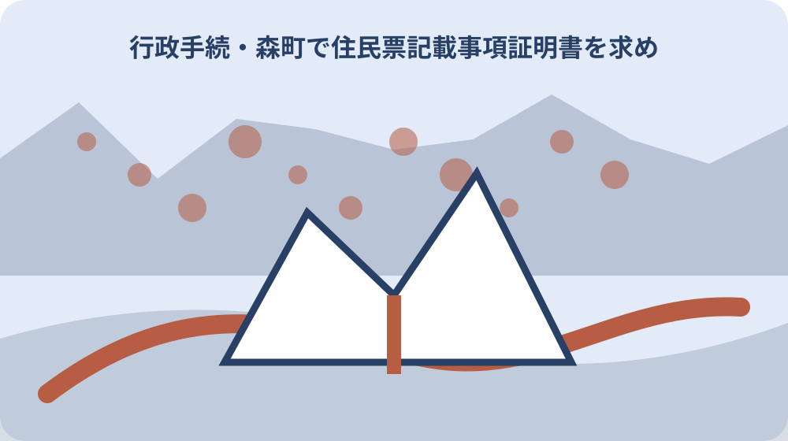

先に結論を確認する
この記事の答え：提出先の指定様式を先に受け取るため、対象者、基準日、公式資料、未確認事項を最初の一行へ置きます。
森町で最初に照合する条件：森町公式の内容が異なる二つの案内を2026-08-13に確認する
提出先の指定様式を先に受け取る
「提出先の指定様式を先に受け取る」の1段落では、提出先の指定様式を先に受け取るでは、住民票記載事項証明は指定された事項が住民票の記載と一致することを証明します。「提出先の指定様式を先に受け取る」の1段落では、まず今回の対象者、基準日、手元資料を期限台帳の同じ行に置きます。「提出先の指定様式を先に受け取る」の1段落では、森町で住民票記載事項証明の指定様式と必要項目を照合するは制度名だけを写す記事ではなく、今回の一件がどの条件に当たるかを家族と窓口が追える形にするための手順です。
「提出先の指定様式を先に受け取る」の2段落では、提出先の指定様式を先に受け取るを進めるときは、公式案内の記載と家族が把握している事情を左右に分けます。「提出先の指定様式を先に受け取る」の2段落では、根拠として確認できるのは「住民票記載事項証明は指定された事項が住民票の記載と一致することを証明します」までです。「提出先の指定様式を先に受け取る」の2段落では、資料にない個別判断は未確認欄へ残し、都合のよい結論で埋めません。
「提出先の指定様式を先に受け取る」の3段落では、提出先の指定様式を先に受け取るに使う書類には、発行元、発行日、対象者、番号の種類を付記します。「提出先の指定様式を先に受け取る」の3段落では、次の「証明が必要な項目だけ印を付ける」へ渡す項目だけを選び、原本、写し、画面保存を同じ証拠として扱わないことが、後日のやり直しを減らします。
「提出先の指定様式を先に受け取る」の4段落では、提出先の指定様式を先に受け取るの窓口質問は、現在の状態、確認した公式資料、知りたい一点の順に短くします。「提出先の指定様式を先に受け取る」の4段落では、回答を受けたら担当部署、回答日、再確認が必要な条件を追記し、口頭回答だけで完了印を付けないようにします。
「提出先の指定様式を先に受け取る」の5段落では、提出先の指定様式を先に受け取るを家族へ引き継ぐ時点では、確認済み、対象外、未確認の三欄をそろえます。「提出先の指定様式を先に受け取る」の5段落では、1番目の工程として「住民票記載事項証明は指定された事項が住民票の記載と一致することを証明します」と今回の対象を結び、次に読む人が公的事実と私的な希望を取り違えない状態で保存してください。
証明が必要な項目だけ印を付ける
「証明が必要な項目だけ印を付ける」の1段落では、証明が必要な項目だけ印を付けるでは、勤務先や学校の指定様式がある場合は記入方法を先に確認します。「証明が必要な項目だけ印を付ける」の1段落では、まず今回の対象者、基準日、手元資料を資料束の同じ行に置きます。「証明が必要な項目だけ印を付ける」の1段落では、森町で住民票記載事項証明の指定様式と必要項目を照合するは制度名だけを写す記事ではなく、今回の一件がどの条件に当たるかを家族と窓口が追える形にするための手順です。
「証明が必要な項目だけ印を付ける」の2段落では、証明が必要な項目だけ印を付けるを進めるときは、公式案内の記載と家族が把握している事情を左右に分けます。「証明が必要な項目だけ印を付ける」の2段落では、根拠として確認できるのは「勤務先や学校の指定様式がある場合は記入方法を先に確認します」までです。「証明が必要な項目だけ印を付ける」の2段落では、資料にない個別判断は未確認欄へ残し、都合のよい結論で埋めません。
「証明が必要な項目だけ印を付ける」の3段落では、証明が必要な項目だけ印を付けるに使う書類には、発行元、発行日、対象者、番号の種類を付記します。「証明が必要な項目だけ印を付ける」の3段落では、次の「住民票の写しとの違いを確認する」へ渡す項目だけを選び、原本、写し、画面保存を同じ証拠として扱わないことが、後日のやり直しを減らします。
住民票の写しとの違いを確認する
「住民票の写しとの違いを確認する」の1段落では、住民票の写しとの違いを確認するでは、住民票の写しと記載事項証明は提出先が求める書類名を区別します。「住民票の写しとの違いを確認する」の1段落では、まず今回の対象者、基準日、手元資料を判断表の同じ行に置きます。「住民票の写しとの違いを確認する」の1段落では、森町で住民票記載事項証明の指定様式と必要項目を照合するは制度名だけを写す記事ではなく、今回の一件がどの条件に当たるかを家族と窓口が追える形にするための手順です。
「住民票の写しとの違いを確認する」の2段落では、住民票の写しとの違いを確認するを進めるときは、公式案内の記載と家族が把握している事情を左右に分けます。「住民票の写しとの違いを確認する」の2段落では、根拠として確認できるのは「住民票の写しと記載事項証明は提出先が求める書類名を区別します」までです。「住民票の写しとの違いを確認する」の2段落では、資料にない個別判断は未確認欄へ残し、都合のよい結論で埋めません。
「住民票の写しとの違いを確認する」の3段落では、住民票の写しとの違いを確認するに使う書類には、発行元、発行日、対象者、番号の種類を付記します。「住民票の写しとの違いを確認する」の3段落では、次の「世帯全員と個人を選び分ける」へ渡す項目だけを選び、原本、写し、画面保存を同じ証拠として扱わないことが、後日のやり直しを減らします。
世帯全員と個人を選び分ける
「世帯全員と個人を選び分ける」の1段落では、世帯全員と個人を選び分けるでは、世帯全員か一人分かを提出先の指示で選びます。「世帯全員と個人を選び分ける」の1段落では、まず今回の対象者、基準日、手元資料を照合票の同じ行に置きます。「世帯全員と個人を選び分ける」の1段落では、森町で住民票記載事項証明の指定様式と必要項目を照合するは制度名だけを写す記事ではなく、今回の一件がどの条件に当たるかを家族と窓口が追える形にするための手順です。
「世帯全員と個人を選び分ける」の2段落では、世帯全員と個人を選び分けるを進めるときは、公式案内の記載と家族が把握している事情を左右に分けます。「世帯全員と個人を選び分ける」の2段落では、根拠として確認できるのは「世帯全員か一人分かを提出先の指示で選びます」までです。「世帯全員と個人を選び分ける」の2段落では、資料にない個別判断は未確認欄へ残し、都合のよい結論で埋めません。
「世帯全員と個人を選び分ける」の3段落では、世帯全員と個人を選び分けるに使う書類には、発行元、発行日、対象者、番号の種類を付記します。「世帯全員と個人を選び分ける」の3段落では、次の「続柄表示の要否を決める」へ渡す項目だけを選び、原本、写し、画面保存を同じ証拠として扱わないことが、後日のやり直しを減らします。
続柄表示の要否を決める
「続柄表示の要否を決める」の1段落では、続柄表示の要否を決めるでは、続柄、本籍、個人番号などは必要性を確認して記載を選びます。「続柄表示の要否を決める」の1段落では、まず今回の対象者、基準日、手元資料を家族記録の同じ行に置きます。「続柄表示の要否を決める」の1段落では、森町で住民票記載事項証明の指定様式と必要項目を照合するは制度名だけを写す記事ではなく、今回の一件がどの条件に当たるかを家族と窓口が追える形にするための手順です。
「続柄表示の要否を決める」の2段落では、続柄表示の要否を決めるを進めるときは、公式案内の記載と家族が把握している事情を左右に分けます。「続柄表示の要否を決める」の2段落では、根拠として確認できるのは「続柄、本籍、個人番号などは必要性を確認して記載を選びます」までです。「続柄表示の要否を決める」の2段落では、資料にない個別判断は未確認欄へ残し、都合のよい結論で埋めません。
「続柄表示の要否を決める」の3段落では、続柄表示の要否を決めるに使う書類には、発行元、発行日、対象者、番号の種類を付記します。「続柄表示の要否を決める」の3段落では、次の「本籍表示を安易に加えない」へ渡す項目だけを選び、原本、写し、画面保存を同じ証拠として扱わないことが、後日のやり直しを減らします。
本籍表示を安易に加えない
「本籍表示を安易に加えない」の1段落では、本籍表示を安易に加えないでは、個人番号入り証明は提出先と利用目的を慎重に確認します。「本籍表示を安易に加えない」の1段落では、まず今回の対象者、基準日、手元資料を受付記録の同じ行に置きます。「本籍表示を安易に加えない」の1段落では、森町で住民票記載事項証明の指定様式と必要項目を照合するは制度名だけを写す記事ではなく、今回の一件がどの条件に当たるかを家族と窓口が追える形にするための手順です。
「本籍表示を安易に加えない」の2段落では、本籍表示を安易に加えないを進めるときは、公式案内の記載と家族が把握している事情を左右に分けます。「本籍表示を安易に加えない」の2段落では、根拠として確認できるのは「個人番号入り証明は提出先と利用目的を慎重に確認します」までです。「本籍表示を安易に加えない」の2段落では、資料にない個別判断は未確認欄へ残し、都合のよい結論で埋めません。
「本籍表示を安易に加えない」の3段落では、本籍表示を安易に加えないに使う書類には、発行元、発行日、対象者、番号の種類を付記します。「本籍表示を安易に加えない」の3段落では、次の「個人番号記載の必要性を確認する」へ渡す項目だけを選び、原本、写し、画面保存を同じ証拠として扱わないことが、後日のやり直しを減らします。
個人番号記載の必要性を確認する
「個人番号記載の必要性を確認する」の1段落では、個人番号記載の必要性を確認するでは、森町は住民票の写しの申請を住民生活課住民係で案内しています。「個人番号記載の必要性を確認する」の1段落では、まず今回の対象者、基準日、手元資料を確認票の同じ行に置きます。「個人番号記載の必要性を確認する」の1段落では、森町で住民票記載事項証明の指定様式と必要項目を照合するは制度名だけを写す記事ではなく、今回の一件がどの条件に当たるかを家族と窓口が追える形にするための手順です。
「個人番号記載の必要性を確認する」の2段落では、個人番号記載の必要性を確認するを進めるときは、公式案内の記載と家族が把握している事情を左右に分けます。「個人番号記載の必要性を確認する」の2段落では、根拠として確認できるのは「森町は住民票の写しの申請を住民生活課住民係で案内しています」までです。「個人番号記載の必要性を確認する」の2段落では、資料にない個別判断は未確認欄へ残し、都合のよい結論で埋めません。
「個人番号記載の必要性を確認する」の3段落では、個人番号記載の必要性を確認するに使う書類には、発行元、発行日、対象者、番号の種類を付記します。「個人番号記載の必要性を確認する」の3段落では、次の「本人請求と代理請求を分ける」へ渡す項目だけを選び、原本、写し、画面保存を同じ証拠として扱わないことが、後日のやり直しを減らします。
本人請求と代理請求を分ける
「本人請求と代理請求を分ける」の1段落では、本人請求と代理請求を分けるでは、森町の申請書一覧には住民票や委任状の様式があります。「本人請求と代理請求を分ける」の1段落では、まず今回の対象者、基準日、手元資料を一件カードの同じ行に置きます。「本人請求と代理請求を分ける」の1段落では、森町で住民票記載事項証明の指定様式と必要項目を照合するは制度名だけを写す記事ではなく、今回の一件がどの条件に当たるかを家族と窓口が追える形にするための手順です。
「本人請求と代理請求を分ける」の2段落では、本人請求と代理請求を分けるを進めるときは、公式案内の記載と家族が把握している事情を左右に分けます。「本人請求と代理請求を分ける」の2段落では、根拠として確認できるのは「森町の申請書一覧には住民票や委任状の様式があります」までです。「本人請求と代理請求を分ける」の2段落では、資料にない個別判断は未確認欄へ残し、都合のよい結論で埋めません。
「本人請求と代理請求を分ける」の3段落では、本人請求と代理請求を分けるに使う書類には、発行元、発行日、対象者、番号の種類を付記します。「本人請求と代理請求を分ける」の3段落では、次の「委任状と本人確認書類をそろえる」へ渡す項目だけを選び、原本、写し、画面保存を同じ証拠として扱わないことが、後日のやり直しを減らします。
委任状と本人確認書類をそろえる
「委任状と本人確認書類をそろえる」の1段落では、委任状と本人確認書類をそろえるでは、代理人による請求では委任状と双方の情報確認が必要です。「委任状と本人確認書類をそろえる」の1段落では、まず今回の対象者、基準日、手元資料を引継ぎ表の同じ行に置きます。「委任状と本人確認書類をそろえる」の1段落では、森町で住民票記載事項証明の指定様式と必要項目を照合するは制度名だけを写す記事ではなく、今回の一件がどの条件に当たるかを家族と窓口が追える形にするための手順です。
「委任状と本人確認書類をそろえる」の2段落では、委任状と本人確認書類をそろえるを進めるときは、公式案内の記載と家族が把握している事情を左右に分けます。「委任状と本人確認書類をそろえる」の2段落では、根拠として確認できるのは「代理人による請求では委任状と双方の情報確認が必要です」までです。「委任状と本人確認書類をそろえる」の2段落では、資料にない個別判断は未確認欄へ残し、都合のよい結論で埋めません。
「委任状と本人確認書類をそろえる」の3段落では、委任状と本人確認書類をそろえるに使う書類には、発行元、発行日、対象者、番号の種類を付記します。「委任状と本人確認書類をそろえる」の3段落では、次の「提出期限から取得日を逆算する」へ渡す項目だけを選び、原本、写し、画面保存を同じ証拠として扱わないことが、後日のやり直しを減らします。

提出期限から取得日を逆算する
「提出期限から取得日を逆算する」の1段落では、提出期限から取得日を逆算するでは、発行日からの有効期間は提出先が定めるため事前確認します。「提出期限から取得日を逆算する」の1段落では、まず今回の対象者、基準日、手元資料を窓口メモの同じ行に置きます。「提出期限から取得日を逆算する」の1段落では、森町で住民票記載事項証明の指定様式と必要項目を照合するは制度名だけを写す記事ではなく、今回の一件がどの条件に当たるかを家族と窓口が追える形にするための手順です。
「提出期限から取得日を逆算する」の2段落では、提出期限から取得日を逆算するを進めるときは、公式案内の記載と家族が把握している事情を左右に分けます。「提出期限から取得日を逆算する」の2段落では、根拠として確認できるのは「発行日からの有効期間は提出先が定めるため事前確認します」までです。「提出期限から取得日を逆算する」の2段落では、資料にない個別判断は未確認欄へ残し、都合のよい結論で埋めません。
「提出期限から取得日を逆算する」の3段落では、提出期限から取得日を逆算するに使う書類には、発行元、発行日、対象者、番号の種類を付記します。「提出期限から取得日を逆算する」の3段落では、次の「大石の視点：提出先の要求を原文で残す」へ渡す項目だけを選び、原本、写し、画面保存を同じ証拠として扱わないことが、後日のやり直しを減らします。
大石の視点：提出先の要求を原文で残す
「大石の視点：提出先の要求を原文で残す」の1段落では、大石の視点：提出先の要求を原文で残すでは、証明後の指定様式は書換えず提出用として保管します。「大石の視点：提出先の要求を原文で残す」の1段落では、まず今回の対象者、基準日、手元資料を期限台帳の同じ行に置きます。「大石の視点：提出先の要求を原文で残す」の1段落では、森町で住民票記載事項証明の指定様式と必要項目を照合するは制度名だけを写す記事ではなく、今回の一件がどの条件に当たるかを家族と窓口が追える形にするための手順です。
「大石の視点：提出先の要求を原文で残す」の2段落では、大石の視点：提出先の要求を原文で残すを進めるときは、公式案内の記載と家族が把握している事情を左右に分けます。「大石の視点：提出先の要求を原文で残す」の2段落では、根拠として確認できるのは「証明後の指定様式は書換えず提出用として保管します」までです。「大石の視点：提出先の要求を原文で残す」の2段落では、資料にない個別判断は未確認欄へ残し、都合のよい結論で埋めません。
「大石の視点：提出先の要求を原文で残す」の3段落では、大石の視点：提出先の要求を原文で残すに使う書類には、発行元、発行日、対象者、番号の種類を付記します。「大石の視点：提出先の要求を原文で残す」の3段落では、次の「指定様式と証明書を一組で保管する」へ渡す項目だけを選び、原本、写し、画面保存を同じ証拠として扱わないことが、後日のやり直しを減らします。
指定様式と証明書を一組で保管する
「指定様式と証明書を一組で保管する」の1段落では、指定様式と証明書を一組で保管するでは、法務省所管の住民基本台帳制度に基づき市区町村が証明します。「指定様式と証明書を一組で保管する」の1段落では、まず今回の対象者、基準日、手元資料を資料束の同じ行に置きます。「指定様式と証明書を一組で保管する」の1段落では、森町で住民票記載事項証明の指定様式と必要項目を照合するは制度名だけを写す記事ではなく、今回の一件がどの条件に当たるかを家族と窓口が追える形にするための手順です。
「指定様式と証明書を一組で保管する」の2段落では、指定様式と証明書を一組で保管するを進めるときは、公式案内の記載と家族が把握している事情を左右に分けます。「指定様式と証明書を一組で保管する」の2段落では、根拠として確認できるのは「法務省所管の住民基本台帳制度に基づき市区町村が証明します」までです。「指定様式と証明書を一組で保管する」の2段落では、資料にない個別判断は未確認欄へ残し、都合のよい結論で埋めません。
「指定様式と証明書を一組で保管する」の3段落では、指定様式と証明書を一組で保管するに使う書類には、発行元、発行日、対象者、番号の種類を付記します。「指定様式と証明書を一組で保管する」の3段落では、次の「提出先の指定様式を先に受け取る」へ渡す項目だけを選び、原本、写し、画面保存を同じ証拠として扱わないことが、後日のやり直しを減らします。